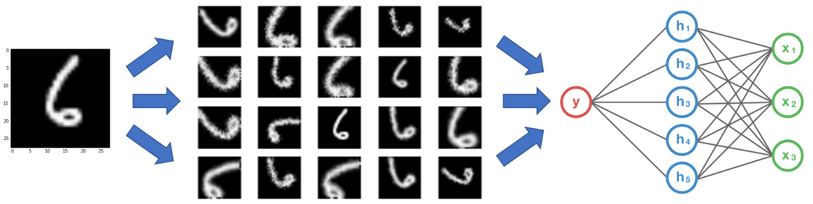

class: center, middle # Convolutional Neural Networks Guillaume Ligner - Côme Arvis .center[ <img src="images/ece_logo.png" style="width: 300px;" /> ] --- # Kaggle project instructions .small90[ End date: December 15th, 2018 at midnight Register link: [https://www.kaggle.com/t/abad7193e5db43a58968a1d0ed1fb198](https://www.kaggle.com/t/abad7193e5db43a58968a1d0ed1fb198) Max number of people per team: 3 Forbidden: handcraft labelling of images For evaluation you have to provide: - Final version of your code: - Must allow to generate a csv file with your team's results in it - Report - PDF format, 2-3 pages - Must explain what you did to tackle the challenge - Include tries that might not have worked but that are still relevant ] --- # Fields of application We are going to find out about convolutional networks<br/> What are they used for ?<br/> -- Most importantly in **computer vision** .center[] --- # Fields of application Computer vision: object detection .center[] --- # Fields of application Computer vision: ImageNet classification .center[] --- # Fields of application Computer vision .center[<img src="images/applications_many.png " style="width: 700px;margin-top: 2%" />] --- # Fields of application Computer vision: example of Mask-RCNN application for segmentation .center[<img src="images/mask_rcnn.gif" style="width: 580px;margin-top: 10%" />] --- # Fields of application .big130[ Many others ] <br/> -- .big130[ Speech recognition & speech synthesis ] -- .big110[ Natural Language Processing - Temporal Convolutional Nets (TCN) - Direct competitor to RNNs ] -- .big130[ Any problem with a spatial (or sequential) structure ] --- # The Convolution Operation .small90[ Discrete convolution (actually cross-correlation) between two functions $f$ and $g$: $$ (f \star g) (x) = \sum\_{b-a = x} f(a) . g(b) = \sum\_{a} f(a) . g(x + a) $$ 2D-convolutions (actually 2D cross-correlation): $ (f \star g) (x, y) = \sum_n \sum_m f(n, m) . g(x + n, y + m) $ $f$ is a convolution **kernel** or **filter** applied to the 2-d map $g$ (our image) ] --- # The Convolution Operation .small80[ Here is the computer vision point of view of the convolution operation $(k \star im) (x, y) = \sum\limits\_{n=0}^2 \sum\limits\_{m=0}^2 k(n, m) . im(x + n, y + m)$ ] -- .small80[ - Kernel $k$ here is of shape $(n,m)$ and image $im$ of shape $(5,5)$</br> What is actually happening ? ] -- .center[<img src="images/numerical_no_padding_no_strides.gif" style="width: 220px;margin-top: -6%;margin-left: 10%" />] .left-column100.small80[What are the operations being performed ?] <br/> .left-column40.small70.small60[ - Upper-left element of the output tensor is formed by applying the kernel to the corresponding upper-left region in the input tensor - Output is the sum of the entrywise (Hadamart) product between kernel and region of the input ] .right-column60.small70[ .center[] ] --- # The Convolution Operation .small70[ - What we just saw is the convolution operations product between a $2d$ kernel and a $2d$ image<br/> ] -- .small70[ - In practice an image is usually broken into several $2d$ descriptions: 1 per color. <br/> - The traditional RGB image will be represented as a $3d$ tensor of shape $(3,H,W)$ <br/> - $3$ in shape stands for the number of pointers to matrices of shape $(H,W)$. Each matrix is a matrix of pixel color intensities<br/> ] -- .small70[ - What does the convolution operation become in the $3d$ case ? ] -- .left-column100[] -- .small90[ <br/><br/><br/><br/> Then again, what is actually happening ? ] -- .left-column30[<img src="images/convolution.gif" style="width: 300px;margin-top: 2%;margin-left: -10%" />] .right-column70.small70[ - Outputted elements formed by applying a $3d$ kernel to corresponding $3d$ regions in input - After performing a set of convolution operations a matrix is formed - Final output is a $3d$ tensor - Sets of operations performed several times with different kernels - Different types of characteristics extracted from the image - Some padding used, we will see about that later ] --- # Motivations for CNNs .small80[ - Convolution leverages three important ideas that can help improve a machine learning system: - **Sparse interactions** - **Parameter sharing** - **Equivariant representations** ] -- .small80[ Sparse interactions (Local connectivity) - An output neuron depends only on a few local input neurons - This is accomplished by making the kernel smaller than the input ] -- .left-column50[] .right-column50.small80[ - $(Top)$ When $s$ is formed by convolution with a kernel of width $3$, only three outputs are affected by $x_3$ - $(Bottom)$ When $s$ is formed by matrix multiplication, connectivity is no longer sparse, so all of the outputs are affected by $x_3$ ] --- # Motivations for CNNs Parameter sharing .small80[ - Parameter sharing refers to using the same parameter for more than one function in a model ] -- .small80[ - In a traditional neural net, each element of a weight matrix is used **exactly once** ] -- .small80[ - In a conv' net, each kernel parameter is used at every location of the image (except boundary pixels) ] <br/> -- .left-column40[] .right-column60.small70[ - Black arrows indicate uses a particular parameter in an output - $(Top)$ The black arrows indicate uses of the **central element of a 3-element kernel** in a convolutional model - Parameter involved in **all output neurons $s_i$** - $(Bottom)$ **Single** black arrow indicates **single** use of the central element of the weight matrix in a fully connected model - Model has no parameter sharing, parameter involved in **output neuron $s_3$** only ] --- # Motivations for CNNs .small90[ Equivariance of convolution to translation - To say a function is equivariant means that if the input changes, the output changes in the same way ] -- .small90[ - Specifically, a function $f(x)$ is equivariant to a function $g$ if <br/> - $f(g(x)) = g(f (x))$<br/> - $ f \circ g (x) = g \circ f (x)$ ] -- .small80[ - In our context, saying that convolution is equavariant to translation means that: .center[ $Translation \circ Convolution(image) = Convolution \circ Translation(image)$ ] ] --- # Motivations for CNNs .small90[ Equivariance of convolution to translation - Let's analyze a concrete example: ] -- .center[] --- # Motivations for CNNs .small90[ Equivariance of convolution to translation .center[] ] -- .firebrick.small80[ <br/> We just showed that: .center[$Translation \circ Convolution(image) = Convolution \circ Translation(image)$] ] --- # Multiple convolutions .center[ ] -- .small70[ - An image is described as a tensor of $3d$ shape $= (height, width, channels)$ - $channels$ refers to the number of colors: can be $3$ if RGB image, $1$ if grey image etc ] -- .small65[ - Recall what the $3d$ convolution operations look like: $(k \star im) (x, y, z) = \sum\limits\_{n=0}^2 \sum\limits\_{m=0}^2 \sum\limits\_{c=0}^{3-1} k(n,m,c) . im(x + n, y + m, z + c)$ ] -- .left-column30[] .right-column70.small70[ - Red feature map $=$ result of all convolution operations - Red feature map built just like in animated example, only red kernel is $3d$ of shape (5,5,3) - Output feature map represents red kernel trying to extract one type of characteristic out of the image at all locations - .firebrick[**1**] kernel, .firebrick[**1**] set of conv' operations, .firebrick[**1**] feature map, .firebrick[**1**] type of characteristic extracted, thus feature map output of shape (24,24,.firebrick[**1**]), kernel params tensor of shape (5,5,3,.firebrick[**1**]) ] --- # Multiple convolutions .center[ ] <br/> .small70[ - Often we want to extract more than one type of characteristic ] -- .small70[ - Following this example we use another kernel of shape $(5,5,3)$ ] --- # Multiple convolutions .center[ ] <br/> .small70[ - Often we want to extract more than one type of characteristic ] .small70[ - Following this example we use another kernel of shape $(5,5,3)$ ] .small70[ - Each kernel extracts a type of characteristic at all locations of the image and outputs $1$ more feature map ] --- # Multiple convolutions .center[ ] <br/> .small70[ - Often we want to extract more than one type of characteristic ] .small70[ - Following this example we use another kernel of shape $(5,5,3)$ ] .small70[ - Each kernel extracts a type of characteristic at all locations of the image and outputs $1$ more feature map ] .small70[ - Final kernel params' tensor is of shape $(5,5,3,4)$ and final feature maps tensor is of shape (24,24,4) - $4$ stands for $4$ different kernels performing the $4$ sets of convolution operations - $4$ stands for the $4$ feature maps outputted, $1$ for each kernel ] --- # MLP vs Convolutional Network codes **Fully Connected Network: MLP (Keras functional API)** ```python input_image = Input(shape=(28, 28, 1)) x = Flatten()(input_image) x = Dense(256, activation='relu')(x) x = Dense(10, activation='softmax')(x) mlp = Model(inputs=input_image, outputs=x) ``` -- **Convolutional Network (Keras functional API)** ```python input_image = Input(shape=(28, 28, 1)) *x = Conv2D(32, 5, activation='relu')(input_image) *x = MaxPool2D(2, strides=2)(x) *x = Conv2D(64, 3, activation='relu')(x) *x = MaxPool2D(2, strides=2)(x) x = Flatten()(x) x = Dense(256, activation='relu')(x) x = Dense(10, activation='softmax')(x) convnet = Model(inputs=input_image, outputs=x) ``` -- .small80.center[ 2D spatial organization of features preserved untill `Flatten` ] --- # Strides .small80[ - Strides: increment step size for the convolution operator - For stride size $k$ kernel performs convolution operation, skips next $k-1$ pixels and performs another convolution operation and so on - There are $vertical$ and $horizontal$ stride sizes which may not be the same - Strides reduce the size of the ouput map - Stride of shape $(2,2)$ ($2$ $vertical$ and $2$ $horizontal$) reduce number of numerical outputted quantities by roughly $2 \times 2$ ] .center[ <img src="images/no_padding_strides.gif" style="width: 215px;" /> ] .center.small[ Example with kernel size $3 \times 3$ and a stride of $2$ (image in blue) ] --- # Padding [//]: # (Useful to keep output spatial dimension of feature maps constant across kernels of different shapes) <br/> - Padding: artificially fill borders of image - Useful with strides and large kernels - Because of strides kernel might end up virtually partly outside of the image - Usually: fill with 0s .center[ <img src="images/same_padding_no_strides.gif" style="width: 260px;" /> ] --- # Dealing with shapes **Kernel** or **Filter** shape $(F, F, C^i, C^o)$ .left-column60.small80[ - $F \times F$ kernel size, - $C^i$ input channels: e.g. number of colors - $C^o$ output channels: number of feature maps - $1$ feature map $=$ $1$ extraction of $1$ type of characteristic ] .right-column40[ .center[ ] ] -- .small70[ Kernel number of parameters: $(F \times F \times C^i + 1) \times C^o$ - $1$ stands for the bias, 1 per kernel of shape $(F, F, C^i)$ - There is $1$ kernel per outputted feature map ] -- .small70[ **Activations** or **Feature maps** shape: - Input $(W^i, H^i, C^i)$ - Output $(W^o, H^o, C^o)$ ] -- .small70.center[ $W^o = \frac{(W^i +2P) - F}{S} + 1$ $(P)$ being the amount of zero padding around borders, $(S)$ stride applied ] --- # Dealing with shapes Reminders about padding .left-column50.small70[ - Sometimes convenient to pad input around borders - Size of padding is a hyperparameter ] .left-column50.small70[ - Allows us to control the spatial size of the output volumes - Most commonly used to preserve shape of the input ] -- .center[] -- .small75[ - In example: $1d$ kernel of size $F = 3$, $1d$ input of size $W = 5$, zero-padding around borders $P = 1$ - Left: kernel strided across the input with stride of $S = 1$, giving output of size $\frac{(5 + 2 \times 1) - 3}{1} + 1 = 5$ - Right: The neuron uses stride of $S = 2$, giving output of size $\frac{(5 + 2 \times 1) - 3}{2} + 1 = 3$ - Notice that stride S = 3 could not be used since it wouldn't fit neatly across the volume. In terms of the equation, this can be determined since $(5 + 2 \times 1) - 3 = 4$ is not divisible by $3$ ] --- # Dealing with shapes .small70[ **What we learn from previous example** - In left example above on left the input dimension was 5 and the output dimension was also 5 - Because kernel size $ = 3$ and we used zero-padding of $1$ - Without zero-padding, output size would be $3$ because that is the number of kernels that horizontally fit across image ] -- .small70[ **Going back to shapes** - $W^i +2P$ represents virtual width of image with padding - $(W^i +2P) - F$ represents space left on image after placing kernel over it - convolution operation followed by stride produces $1$ scalar on feature map - $(W^i +2P) - F$ must be a multiple of stride - $W^o = $ nb scalars produced during horizontal striding across image = $\frac{(W^i +2P) - F}{S} + 1$ ] -- .small70[ **Constraints on strides** - This formula means that hyperparameters have mutual constraints - Ex: input $W=10$, $P=0$, kernel-filter size $F = 3$ then impossible to use stride $S = 2$, since $\frac{(10+0)-3}{2} = 4.5$ i.e. not an integer, indicating that the kernels don’t "fit" neatly across the input - Setting of the hyperparameters considered invalid ] --- # Pooling - Local invariance - No parameters: max or average of $2 \times 2$ units - Using pooling we assume that each unit should be invariant to small translations -- <br/><br/> .center[ ] --- # Hierarchical representation .center[ <img src="images/lecunconv.png" style="width: 760px;" /> ] --- # Pre-trained models .small80[ - Training a model to perform a computer vision task can take days if it has to extract a lot of different concepts in images and has to train on millions of images ] -- .small80[ - Many models trained on ImageNet and their weights are publicly available ] ### Transfer learning .small80[ - Load a public model ] -- .small80[ - Use pre-trained weights by removing layers involved in providing the answer to the problem (fully connected layers)</br> → Stop at the last layer that extracts concepts (conv/pool layers) - Loaded network is used as a generic feature extractor ] -- .small80[ - Add your own set of fully connected layers that lead to the answer using the high-level representation of the image ] -- .small80[ - Train the weights of the newly added layers on a new classification task ] --- # Data augmentation .left-column40[] -- .-column60[] -- .center[] --- # Data augmentation With Keras: ```python from keras.preprocessing.image import ImageDataGenerator image_gen = ImageDataGenerator( rescale=1. / 255, rotation_range=40, width_shift_range=0.2, height_shift_range=0.2, shear_range=0.2, zoom_range=0.2, horizontal_flip=True, channel_shift_range=9, fill_mode='nearest' ) train_flow = image_gen.flow_from_directory(train_folder) model.fit_generator(train_flow, train_flow.n) ``` --- # ImageNet: an image database .center[ ] - Since 2010 **ImageNet Large Scale Visual Recognition Challenge** (**ILSVRC**) is the competition where research teams evaluate their algorithms on the "ImageNet" image database - They compete to achieve higher accuracy on several visual recognition tasks - In **2012** **AlexNet** improved previous best score by **36**% --- # Architectures: AlexNet .center[ ] - Depth of the model was essential for its high performance<br/> → Computationally expensive, made feasible due to GPUs - **AlexNet** contained eight layers; the first **five** were **convolutional layers**, and the last **three** were **fully connected** layers - Marked start of an industry-wide artificial intelligence boom in usage of **deep convolutional networks** --- # Architectures: VGG-16 .center[ ] <br/> .small70[ - VGG = Visual Geometry Group, an academic group focused on computer vision at Oxford University - VGG is also the CNN architecture that secured $1^{st}$ and $2^{nd}$ positions in the localisation and classification tasks in ImageNet 2014 - The main contribution of VGG is to show that classification/localisation accuracy can be improved by increasing the depth of CNN inspite of using small bigger receptive fields (kernels) - Neural networks prior to VGG used kernels ($7\times7$ and $11\times11$) as compared to $3\times3$ in VGG - But they were not as deep as VGG - There are few variants of VGG, the deepest one is with $19$ weight layers ] --- # VGG memory and parameters ```md Activation maps Parameters INPUT: [224x224x3] = 150K 0 CONV3-64: [224x224x64] = 3.2M (3x3x3)x64 = 1,728 CONV3-64: [224x224x64] = 3.2M (3x3x64)x64 = 36,864 POOL2: [112x112x64] = 800K 0 CONV3-128: [112x112x128] = 1.6M (3x3x64)x128 = 73,728 CONV3-128: [112x112x128] = 1.6M (3x3x128)x128 = 147,456 POOL2: [56x56x128] = 400K 0 CONV3-256: [56x56x256] = 800K (3x3x128)x256 = 294,912 CONV3-256: [56x56x256] = 800K (3x3x256)x256 = 589,824 CONV3-256: [56x56x256] = 800K (3x3x256)x256 = 589,824 POOL2: [28x28x256] = 200K 0 CONV3-512: [28x28x512] = 400K (3x3x256)x512 = 1,179,648 CONV3-512: [28x28x512] = 400K (3x3x512)x512 = 2,359,296 CONV3-512: [28x28x512] = 400K (3x3x512)x512 = 2,359,296 POOL2: [14x14x512] = 100K 0 CONV3-512: [14x14x512] = 100K (3x3x512)x512 = 2,359,296 CONV3-512: [14x14x512] = 100K (3x3x512)x512 = 2,359,296 CONV3-512: [14x14x512] = 100K (3x3x512)x512 = 2,359,296 POOL2: [7x7x512] = 25K 0 FC: [1x1x4096] = 4096 7x7x512x4096 = 102,760,448 FC: [1x1x4096] = 4096 4096x4096 = 16,777,216 FC: [1x1x1000] = 1000 4096x1000 = 4,096,000 TOTAL activations: 24M x 4 bytes ~= 93MB / image (x2 for backward) TOTAL parameters: 138M x 4 bytes ~= 552MB (x2 for plain SGD, x4 for Adam) ``` --- # VGG memory and parameters ```md Activation maps Parameters INPUT: [224x224x3] = 150K 0 *CONV3-64: [224x224x64] = 3.2M (3x3x3)x64 = 1,728 *CONV3-64: [224x224x64] = 3.2M (3x3x64)x64 = 36,864 POOL2: [112x112x64] = 800K 0 CONV3-128: [112x112x128] = 1.6M (3x3x64)x128 = 73,728 CONV3-128: [112x112x128] = 1.6M (3x3x128)x128 = 147,456 POOL2: [56x56x128] = 400K 0 CONV3-256: [56x56x256] = 800K (3x3x128)x256 = 294,912 CONV3-256: [56x56x256] = 800K (3x3x256)x256 = 589,824 CONV3-256: [56x56x256] = 800K (3x3x256)x256 = 589,824 POOL2: [28x28x256] = 200K 0 CONV3-512: [28x28x512] = 400K (3x3x256)x512 = 1,179,648 CONV3-512: [28x28x512] = 400K (3x3x512)x512 = 2,359,296 CONV3-512: [28x28x512] = 400K (3x3x512)x512 = 2,359,296 POOL2: [14x14x512] = 100K 0 CONV3-512: [14x14x512] = 100K (3x3x512)x512 = 2,359,296 CONV3-512: [14x14x512] = 100K (3x3x512)x512 = 2,359,296 CONV3-512: [14x14x512] = 100K (3x3x512)x512 = 2,359,296 POOL2: [7x7x512] = 25K 0 *FC: [1x1x4096] = 4096 7x7x512x4096 = 102,760,448 FC: [1x1x4096] = 4096 4096x4096 = 16,777,216 FC: [1x1x1000] = 1000 4096x1000 = 4,096,000 TOTAL activations: 24M x 4 bytes ~= 93MB / image (x2 for backward) TOTAL parameters: 138M x 4 bytes ~= 552MB (x2 for plain SGD, x4 for Adam) ``` --- # Residual Networks: ResNet .center[] .center[] .small70[ Why ? - When network without ResNet skip connections goes deeper and deeper, training may go wrong - No longer extracts anything more useful from current feature maps - Network can neither stabilize current feature maps by learning identity function that is difficult to learn or go back to previous feature map - Results during training end up becoming worse ] --- # Residual Networks: ResNet .center[] .center[] .small80[ - $1$ every $2$ activations is propagated $2$ layers forward through a "skip connection" ] .left-column40[] .right-column60.small70[ - Input block: $x$ output: $x + F(x)$; $F(x) = W \cdot x + b$ - $W,b$ some learned parameters - A block learns the residual with respect to the identity - Block learns $F(x)$ which is the residual (difference) of the output $F(x) + x$ with respect to the identity $x$ ] --- # Residual Networks: ResNet .center[] .center[] .left-column50.small90[ Why does it work ? ] .right-column50.small70[ - $a^{l+2} = g(z^{l+2} + a^{l})$; $g(x) = reLU(x)$ - $a^{l+2} = g(W^{l+2} \cdot a^{l+1} + b^{l+2} + a^{l})$ - if $W^{l+2} = 0$ and $b^{l+2} = 0$ then $a^{l+2} = g(a^{l}) = a^{l}$; **$a^{l}$ copied to $a^{l+2}$** - .firebrick[Means that identity function can easily be learned] - Somehow guaranteed that performance will either stabilize or improve ] --- # State of the art .small80[ Automated finding of right architectures: - Reinforcement Learning - ENAS: Efficient Neural Architecture Search ] .left-column40.small80[ <br/> - Evolutionary algorithms ] .right-column60[ - An RL algorithms samples Deep Convolutional Network architectures - Rewards are the accuracies on test set - Algorithms becomes better and better at selecting right architectures for the problem at hand ] --- # Beyond Image Classification ### Object detection - We don't know in advance the number of objects in the image - Object detection relies on *object proposal* and *object classification* -- **Object proposal:** find regions of interest (RoIs) in the image **Object classification:** classify the object in these regions -- <br/> .firebrick[ **Object Detection = Object proposal + Object classification** ] .small90[ - One example: **YOLO algorithm** ] --- # Beyond Image Classification ### Segmentation - Output a class map for each pixel (for example: cat vs background) - We predict a class for each pixel in image - Usually classes are: "pixel belongs to object of interest" or "pixel does **NOT** belong to object of interest (background)" .small90[ - One example: **Mask-RCNN** ] --- # Beyond Image Classification .center[ <img src="images/detection_segmentation.png" style="width: 960px;margin-top: 0%;margin-left: -15%" /> ] --- # YOLO - You Only Look Once .center[ <img src="images/yolo1.png" style="width: 450px;" /> ] .footnote.small[Redmon, Joseph, et al. "You only look once: Unified, real-time object detection." CVPR (2016)] -- .small90[ For each cell of the $S \times S$, predict: - $B$ **boxes** sets of coordinates ($4$ values to define each box's coordinates) - $B$ **confidence scores** C ($1$ per box) - $k$ probabilities, $1$ proba per class. Each proba is the probability of this class being inside the cell conditioned on an object being in cell ] --- # YOLO - You Only Look Once .center[ <img src="images/yolo1.png" style="width: 450px;" /> ] .footnote.small[Redmon, Joseph, et al. "You only look once: Unified, real-time object detection." CVPR (2016)] .small90[ For each cell of the $S \times S$: - Confidence scores are {$C_1, ..., C_B$}, probabilities are {$p_1, ..., p_k$} - There are $B \times k$ $(C_i, p_j)$ pairs for each gridcell ] --- # YOLO - You Only Look Once .center[ <img src="images/yolo1.png" style="width: 450px;" /> ] .footnote.small[Redmon, Joseph, et al. "You only look once: Unified, real-time object detection." CVPR (2016)] .small80[ For each cell of the $S \times S$: - Condidering pairs $(C_i, p_j)$ we keep cases where probability to have an object in cell is high AND probability of classified object is high - We define a thresold - Final detection (localisation + classif): pair's gridcell and class $j$ where **$C_i \times p_j > thresold$** ] --- # Mask-RCNN Detection + segmentation .center[ ]